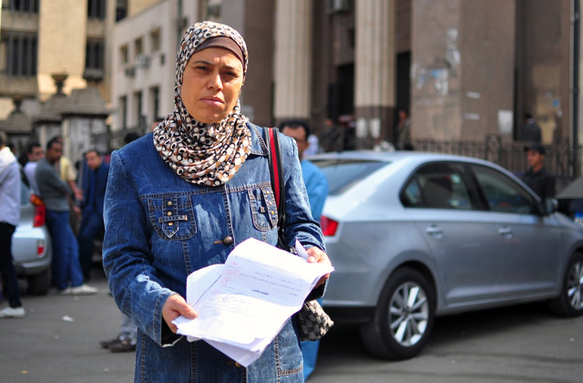
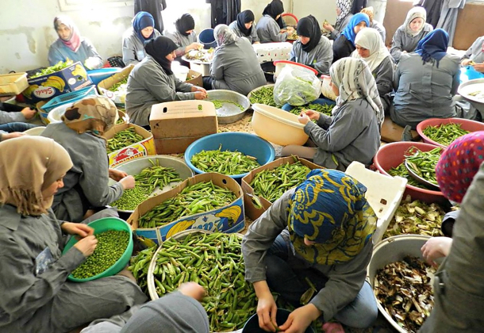
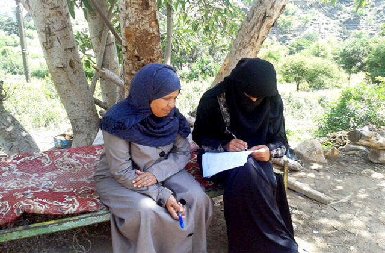
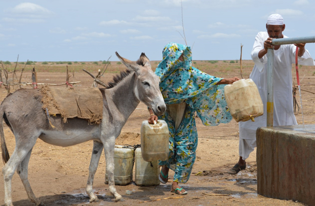

Providing Legal Aid to Navigate the Courts
A woman seeks support at the Legal Aid Office in Cairo to file a case against her husband for abuse. Women like Omaima, often poor and illiterate, face challenges in completing the necessary paperwork with the court, and navigating the court system. The network of Legal Aid Offices around Egypt was established by the Ministry of Justice in 2008 and is supported by UNDP.
ARAB STATES
The Arab States region is in the midst of a period of transition and uncertainty. Although for decades the region achieved tremendous gains in key areas of development, such as education and life expectancy, by the year 2011 it became clear that progress towards more inclusive and sustainable development was urgently needed in many Arab countries.
Since the wave of change seen in early 2011, there have been many positive developments, such as democratic transitions in countries such as Tunisia, increases in women’s representation in political life in many countries, and ongoing pushes for youth employment and empowerment.
However, significant crises have emerged, not least in Syria, where 250,000 lives have been lost and more than 11 million people have been displaced since ghting began in 2011, but also in neighbouring countries seeking to cope with record-high refugee in ows, and other countries such as Yemen and Libya, where communities are struggling to build resilience in the face of grave challenges.
These dynamics come atop long-standing challenges, such as the region’s di culty in creating jobs for youths, exclusion facing women and vulnerable groups, and water and resource insecurity. All told, this is a moment of pivotal importance for the Arab States region as it embarks on a new development agenda.
UNDP stands with its partners across the Arab States region as they address these fundamental issues and seize new opportunities. UNDP works to help build resilience, empower youth and women, and achieve the Sustainable Development Goals, all in order to help set the foundation for inclusive and enduring peace and security across this diverse region of incalculable potential.

COUNTRY SNAPSHOTS

Egypt
UNDP

Syria
UNDP
Coping with the Syria Crisis
Since 2011, the war in Syria has killed more than 250,000 people, injured more than one million, displaced 6.5 million Syrians within the country, and forced another nearly five million to leave the country. Within Syria, UNDP supports projects to clear debris, offer basic health services, and access emergency jobs so people can provide for their families. Here, women peel summer peas at a UNDP-supported food-processing business in Hama, Syria. In neighbouring countries, UNDP helps host communities cope with the influx of refugees by improving infrastructure and boosting local economic and employment opportunities.
Transitioning to Democracy
UNDP has been a key partner supporting national authorities in Tunisia’s ongoing democratic transition. UNDP’s work in Tunisia has helped strengthen electoral institutions, citizen engagement, security-sector reform, and inclusive growth—key priorities for the road ahead as Tunisia strives to consolidate development gains in an uncertain context.

Yemen
UNDP
Helping Midwives Usher in New Life
After crisis erupted in Yemen in March 2015, UNDP’s Yemen Resilience Programme was developed to restore livelihoods, service delivery, social cohesion, and community security. UNDP’s emergency-employment programmes focused on such areas as social businesses, infrastructure, rehabilitation, midwifery, and more. Pictured, a midwife-in-training fills out forms to assess community needs, as part of UNDP’s Private Business Midwifery Project.

Sudan
UNDP
Strengthening the Agricultural and Water Sectors
Gedarif State in Eastern Sudan is one of the most productive areas in the country, sometimes called the country’s “granary.” But the rains do not come as early or as often as they used to. UNDP is helping people in Gedarif and three other states with water access and agriculture training. Sudan is one of six countries participating in the global Canada-UNDP Climate Change Adaptation Facility, alongside Cambodia, Cabo Verde, Haiti, Mali, and Niger. All six projects aim to strengthen resilience in the agricultural and water sectors.